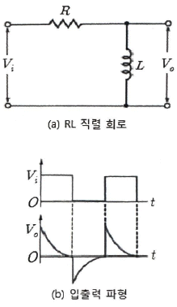
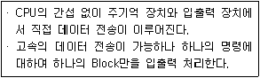
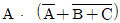
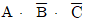
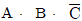
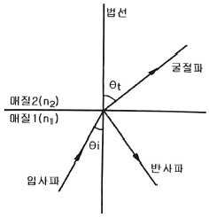
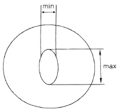
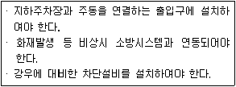

통신선로기능사 (2021-06-26 기출문제)
1과목: 전기전자개론
1. 전기회로에 전압을 가하여 50[C] 의 전하량이 이동하면서 300[J]의 일을 하였다. 이때 가해준 전압은?
- 2[V]
- 4[V]
- 6[V]
- 8[V]
(정답률: 91%)

2. 전류의 세기를 나타내는 단위는?
- Watt [W]
- Volt [V]
- Ohm [Ω]
- Ampere [A]
(정답률: 85%)
3. 시간의 변화에 따라 크기와 방향이 주기적으로 변화하는 전류는?
- 교류전류
- 직류전류
- 누설전류
- 암전류
(정답률: 87%)
4. 우리나라 가정용 교류 전원의 주파수는?
- 50[Hz]
- 60[Hz]
- 70[Hz]
- 80[Hz]
(정답률: 90%)
5. 자석 사이에 작용하는 힘인 자극의 세기(자속)을 나타내는 단위는?
- [N]
- HP]
- [Wb]
- [W]
(정답률: 78%)
6. 절연물 기판에 도체, 저항체, 유전체 재료를 부착시켜 저항, 커패시터 등 소자를 만들고, 이것을 얇은 도체로 접속하여 회로를 구성한 것은?
- 선형 IC
- 반도체 IC
- 박막(Thin Film) IC
- 모놀리식 IC
(정답률: 66%)
7. LC조합 평활회로에서 콘덴서 입력형(π형)과 초크 입력형(L형)을 비교하여 설명한 것으로 옳은 것은?
- 콘덴서 입력형 평활회로의 역전압이 낮다.
- 콘덴서 입력형 평활회로의 맥동률이 크다.
- 콘덴서 입력형 평활회로의 전압변동율이 크다.
- 콘덴서 입력형 평활회로의 직류 출력 전압이 낮다.
(정답률: 57%)
8. 정류회로의 직류 전압이 400[V]이고 리플 전압이 4[V] 일 때, 회로의 리플률은 얼마인가?
- 1[%]
- 2[%]
- 3[%]
- 5[%]
(정답률: 85%)
9. FET의 잡음 중에서 표면 효과에 의한 잡음은?
- 1/f 잡음
- 열 잡음
- 분배 잡음
- 산탄 잡음
(정답률: 67%)
10. 다음 중 정궤환(Positive Feedback) 증폭기를 바르게 설명한 것은?
- 궤환되는 신호가 출력신호와 같은 위상을 갖는 궤환회로
- 궤환되는 신호가 입력신호와 같은 위상을 갖는 궤환회로
- 궤환되는 신호가 출력신호와 반대인 위상을 갖는 궤환회로
- 궤환되는 신호가 입력신호와 반대인 위상을 갖는 궤환회로
(정답률: 63%)
11. 다음 중에서 RC 발진 회로는?
- 하틀리
- BE 피어스
- 이미터 동조
- 빈 브리지
(정답률: 71%)
12. 수정발진기에서 수정결정편의 두께가 두꺼워질수록 발진 주파수는?
- 낮아진다.
- 높아진다.
- 변화가 없다.
- 높아지다가 낮아진다.
(정답률: 74%)
13. 다음 중 신호레벨을 일정한 계단파에 근사화 시켜 레벨이 커질 때는 양(+) 펄스로, 작아져 갈 때는 음(-) 펄스로 대응시키는 변조 방식은?
- PAM
- PWM
- PPM
- 델타변조
(정답률: 68%)
14. 다음 중 펄스 변조에서 아날로그 펄스 변조방식이 아닌 것은?
- PAM
- PCM
- PWM
- PPM
(정답률: 73%)
15. 다음 RL 직렬 회로의 펄스 응답 특성에 대한 설명으로 틀린 것은?

- 위 회로의 시상수는 L/R[초]이다.
- 인덕터의 용량이 클수록 시상수가 크다.
- 저항기의 용량이 작을수록 시상수는 크다.
- 인덕터의 용량이 클수록 출력 파형이 안정된 값에 빨리 도달한다.
(정답률: 60%)
2과목: 전자계산기일반
16. 컴퓨터의 기능 중 프로그램을 해독하고 필요한 장치에 보내며 검사, 통제 역할을 하는 기능은?
- 연산기능
- 기억기능
- 제어기능
- 출력기능
(정답률: 83%)
17. 다음과 같은 특징을 가지는 입출력 제어 방식은?

- 채널 I/O 방식
- 인터럽트 I/O 방식
- 프로그램 I/O 방식
- DMA(Direct Memory Access)I/O 방식
(정답률: 69%)
18. 다음 중 주소지정방식이 아닌 것은?
- 임시(Temporary)주소방식
- 직접(Direct)주소방식
- 간접(Indirect)주소방식
- 임플라이드(Implied) 주소방식
(정답률: 64%)
19. 오류의 발생이 적고 자료의 연속적인 변환이 가능하여 아날로그 및 디지털 변환기에 응용되는 코드는?
- 해밍 코드
- 3초과 코드
- 그레이 코드
- 아스키 코드
(정답률: 67%)
20. 논리식

를 간략히 표현한 것은?- A⋅B⋅C


- A⋅(B+C)
(정답률: 71%)
21. 집적회로 소자가 가장 작은 것부터 큰 것 순으로 바르게 나열한 것은?
- LSI → MSI → SSI → ULSI → VLSI
- MSI → SSI → ULSI → VLSI → LSI
- SSI → MSI → LSI → VLSI → ULSI
- ULSI → VLSI → LSI → MSI → SSI
(정답률: 72%)
22. 순서도의 기본 유형 중 주어진 조건을 만족할 때까지 일정한 내용을 반복 수행하는 형태는?
- 직선형
- 반복형
- 분기형
- 혼합형
(정답률: 86%)
23. 처음에 가전제품을 위한 소프트웨어 개발을 목적으로 개발되었으며 웹 브라우저 상에서 실행될 수 있는 객체지향형 프로그래밍 언어는?
- C++
- JAVA
- COBOL
- BASIC
(정답률: 79%)
24. 당신은 워드를 이용하여 서류를 작성하고 있다. 바로 전에 입력한 내용을 수정하기 위하여 사용하여야 할 단축키는?
- Ctrl+ C
- Ctrl+ V
- Ctrl+ Z
- Ctrl+ B
(정답률: 84%)
25. 다음 중 운영체제의 개념 및 목적과 부합하지 않는 것은?
- 사용자에게 편의 제공
- 구동 프로세스의 자원 분배
- 프로세스의 조성 및 제공
- 프로그램의 작성
(정답률: 70%)
26. 다음 중 전송선로 등가회로에서 1차 정수에 해당하지 않는 것은?
- 저항(R)
- 인덕턴스(L)
- 누설컨덕턴스(G)
- 특성임피던스(Zo)
(정답률: 66%)
27. 전송선로에서 0[dBm]의 기준 전력은?
- 1[pW]
- 1[nW]
- 1[μW]
- 1[mW]
(정답률: 63%)
28. 대역폭이 1.75[kHz]이고 신호전력이 62[W], 잡음전력이 2[W] 일 때 채널용량은?
- 4500[bps]
- 8750[bps]
- 9600[bps]
- 12000[bps]
(정답률: 66%)
29. 전파의 파장과 주파수와의 관계식으로 옳은 것은? (단, λ : 파장, f: 주파수, C: 빛의속도)
- λ=f
- λ=fC
- λ=f/C
- λ=C/f
(정답률: 68%)
30. 단방향 통신방식을 사용하는 기기로 옳은 것은?
- 무전기
- 라디오
- 유선전화
- 스마트폰
(정답률: 77%)
3과목: 통신선로일반
31. 다음 중 광전송시스템에서 구조가 가장 간단하고 스펙트럼 효율이 좋아서 가장 일반적으로 사용되는 신호변조방식은?
- RZ 변조방식
- NRZ 변조방식
- 광듀오바이너리 변조방식
- CSRZ 변조방식
(정답률: 57%)
32. PCM-24 방식에서 표본화 주파수가 8[kHz]라고 하면 표본화 주기 T는 몇 [μs]인가?
- 62.5[μs]
- 125[μs]
- 250[μs]
- 500[μs]
(정답률: 58%)
33. 다음 중 샤논의 정리에 근거하여 전송용량을 증가시키기 위한 방법으로 틀린 것은?
- 전송대역폭을 넓힌다.
- 신호의 크기를 높인다.
- 잡음의 크기를 줄인다.
- 신호대잡음비를 줄인다.
(정답률: 67%)
34. 케이블 심선경 중 한국방식[mm]과 미국방식 [AWG]의 심선경으로 틀린 것은?
- 0.4[mm] = 26[AWG]
- 0.5[mm] = 24[AWG]
- 0.65[mm] = 22[AWG]
- 0.9[mm] = 20[AWG]
(정답률: 56%)
35. UTP 케이블에 8Pin Data용 커넥터를 연결하고자 할 때 모듈러 잭과 플러그의 규격은?
- RJ-11
- RJ-45
- RJ-63
- RJ-100
(정답률: 82%)
36. 광통신에서 가장 구조가 간단하여 보편적으로 사용하는 광변복조 방식은?
- 강도변조 - 직접검파
- ASK - 헤테로다인검파
- FSK - 호모다인검과
- AM - 포락선검과
(정답률: 59%)
37. 광가입자망에서 가입자 댁내에까지 광통신망을 연결하는 방식은?
- FTTO
- FTTB
- FTTC
- FTTH
(정답률: 75%)
38. 다음 그림은 광섬유의 굴절률과 입사각의 관계를 나타낸 것이다. 관계식으로 옳게 나타낸 것은?

- n1cosθi = n2cosθt
- n1sinθt = n2cosθi
- n1cosθt = n2sinθi
- n1sinθi = n2sinθt
(정답률: 60%)
39. 표준직경 50[μm]의 광섬유케이블에서 광심선 코어가 다음 그림과 같이 찌그러져 최대직경 max가 51.7[μm]이고, 최소직경 min가 48.8[μm]이라면 이 광섬유 코어의 비원율은 몇 [%] 인가?

- 9.4
- 7.2
- 5.8
- 3.3
(정답률: 66%)
40. 다음 중 구내 통신 설비 중 옥내 관로의 조건으로 틀린 것은?
- 선조의 수용 및 고정시키는 지지물이 필요하다.
- 두께가 1.2[mm]이상의 배관용 금속관이 필요하다.
- 관로의 곡률 반경은 관로 외경의 10배 이상으로 한다.
- 1구간의 관로 완곡개소는 3개소 이내로 각의 합계는 180이내이어야 한다.
(정답률: 60%)
41. 다음 중 지하선로의 매설방법이 아닌 것은?
- 직매식
- 관로식
- 통신구식
- 통신 선로식
(정답률: 62%)
42. 사업장 및 시설, 장비 등의 안전표지 중 인화성물질, 유해물질, 낙화물, 고압전기 등 위험물 또는 위험한 지역을 알려 주의를 환기시길 필요가 있는 곳에 설치하는 안전표지는?
- 금지표지
- 경고표지
- 지시표지
- 안내표지
(정답률: 81%)
43. [dBr]에 대한 설명으로 옳은 것은?
- 전송계의 기준점과 비교점의 전력비를 상대 레벨로 표시한다.
- 0 상대레벨점을 기준점으로 할 때의 절대 전력량을 표시한다.
- 표준 잡음 평가회로를 통하여 측정된 잡음의 평가 레벨을 표시한다.
- 1[mW]를 기준으로 이것을 0[dBm]으로 하였을 때의 절대 전력량을 표시한다.
(정답률: 25%)
44. 가공선로에서 전선의 단위 길이당 하중이 2[kg/m], 전주간 거리가 40[m], 2,000[kg]일 때 이 선로의 이도(D)는?
- 10[cm]
- 20[cm]
- 30[cm]
- 40[cm]
(정답률: 65%)
45. 다음 중 펄스시험기로 측정할 수 없는 것은?
- 케이블의 임피던스 불균등 측정
- 케이블의 고장점 거리 측정
- 케이블의 특성임피던스 측정
- 케이블의 단선, 단락 고장 측정
(정답률: 59%)
4과목: 선로설비기준
46. 다음 중 1년 이내의 기간을 정하여 정보통신공사업에 종사하는 정보통신기술자의 업무정지를 명할 수 있는 경우가 아닌 것은?
- 국가기술자격이 취소된 경우
- 동시에 두 곳 이상의 공사업체에 종사한 경우
- 다른 사람에게 자기의 성명을 사용하여 용역 또는 공사를 하게 한 경우
- 다른 사람에게 경력수첩을 빌려준 경우
(정답률: 69%)
47. 방송통신발전을 위한 기금은 과학기술정보통신부장관과 방송통신위원회가 관리⋅운용한다. 다음 중 기금의 관리 및 운용에 관한 내용으로 틀린 것은?
- 기금의 공정하고 효율적인 관리⋅운용을 위하여 방송통신발전기금 운용심의회를 둔다.
- 방송통신발전기금운용심의회의 위원은 10명 이내로 하되, 방송통신위원회와 협의를 거쳐 과학기술정보통신부장관이 임명한다.
- 방송통신발전기금운용실의회의 구성과 운영에 관하여 필요한 사항은 대통령령으로 정한다.
- 기금의 운용 및 관리에 필요한 구체적인 사항은 과학기술정보통신부장관이 정한다.
(정답률: 57%)
48. 다음 중 정보통신공사업법의 목적으로 잘못 나타낸 것은?
- 정보통신공사의 적절한 시공과 공사업의 건전한 발전을 도모한다.
- 정보통신공사업의 등록 및 정보통신공사의 도급에 필요한 사항을 규정한다.
- 정보통신공사의 조사 설계⋅시공 감리⋅유지관리⋅기술관리 등의 기본적인 사항을 규정한다.
- 전기통신사업의 적절한 운영과 전기통신의 효율적 관리와 발전을 이바지한다.
(정답률: 64%)
49. 정보통신공사협회는 누구의 인가를 받아 설립할 수 있는가?
- 대통령
- 국무총리
- 특별자치도지사
- 과학기술정보통신부장관
(정답률: 82%)
50. 유선⋅무선⋅광선(光線) 또는 그 밖의 전자적 방식에 의하여 방송통신 콘텐츠를 송신하거나 수신하는 것과 이에 수반하는 일련의 활동을 무엇이라 하는가?
- 방송통신
- 방송통신콘텐츠
- 방송통신사업자
- 방송통신기자재
(정답률: 63%)
51. 다음 중 방송통신기술과 진흥을 통한 방송통신서비스 발전을 위한 시책으로 볼 수 없는 것은?
- 방송통신 기술협력, 기술지도
- 방송통신사업자의 영업이익 분석
- 방송통신과 관련된 기술수준의 조사, 기술의 연구개발
- 방송통신기술의 표준화 및 새로운 방송통신기술의 도입
(정답률: 83%)
52. 사업자가 이용자에게 제공하는 국선을 수용하기 위하여 설치하는 국선수용단자반 및 이상전압전류에 대한 보호장치 등을 무엇이라 하는가?
- 방송통신망
- 전력선통신
- 국선접속설비
- 사업용방송통신설비
(정답률: 72%)
53. 해저통신선과 해저 강전류전선의 최소 이격거리는? (상호 근접하여 설치하여서는 안 되는 거리)
- 500[m]
- 600[m]
- 700[m]
- 800[m]
(정답률: 70%)
54. 도로상 또는 도로로부터 전주높이의 1.2배에 상당하는 거리내의 장소에 설치하는 전주의 안전계수는?
- 1.1
- 1.2
- 1.5
- 1.6
(정답률: 72%)
55. 일반적으로 가공통신선의 지지물에 사용하는 발디딤쇠는 지표상으로 부터 몇 [m]이상의 높이에 부착하여야 하는가?
- 1.2[m]
- 1.8[m]
- 2.5[m]
- 3.2[m]
(정답률: 49%)
56. 다음 중 통신공동구의 설치기준으로 틀린 것은?
- 통신공동구는 통신케이블의 수용에 필요한 공간과 통신케이블의 설치 및 유지⋅보수 등의 작업 시 필요한 공간을 충분히 확보할 수 있는 구조로 설계하여야 한다.
- 통신공동구를 설치하는 때에는 조명⋅배수⋅소방⋅환기 및 접지시설 등 통신케이블의 유지⋅관리에 필요한 부대설비를 설치하여야 한다.
- 통신공동구와 관로가 접속되는 지점에는 통신케이블의 분기를 위한 분기구를 설치하여야 한다.
- 한 지점에서 여러 개의 관로로 분기될 경우에는 작업공간 없이 일정거리이하의 간격을 유지하여야 한다.
(정답률: 75%)
57. 다음 중 접지저항에 관한 규정으로 옳지 않는 것은?
- 교환설비⋅송설비 및 통신케이블 등이 사람이나 방송통신설비에 피해를 줄 우려가 있을 때는 접지단자를 설치하여 접지하여야 한다.
- 보호기를 설치하지 않는 구내통신단자함의 접지저항은 100[Ω] 이하로 할 수 있다.
- 철탑이외 전주 등에 시설하는 이동통신용 중계기는 반드시 10[Ω] 이하로 하여야 한다.
- 전도성이 없는 인장선을 사용하는 광섬유케이블의 경우 접지를 하지 않을 수 있다.
(정답률: 55%)
58. 가공통신선과 고압 전차선과의 수평이격거리는 몇 [m] 이상인가?
- 0.5
- 0.8
- 1.0
- 1.2
(정답률: 51%)
59. 다음은 홈네트워크설비 중 어떤시스템에 관한설명인가?

- 무인택배시스템
- 전자출입시스템
- 원격검침시스템
- 차량출입시스템
(정답률: 69%)
60. 국선⋅국선단자함 또는 국선배선반과 초고속통신망장비 등 각종 구내 통신용설비를 설치하기 위한 공간을 무엇이라 하는가?
- 국선서버실
- 통신배관실
- 집중구내통신실
- 구내네트워크센터
(정답률: 50%)
일 = 전하량 × 전압 × 이동한 거리
문제에서 주어진 값들을 대입하면 다음과 같습니다.
300[J] = 50[C] × 전압 × 이동한 거리
이동한 거리는 주어지지 않았으므로, 전압을 구하기 위해서는 이동한 거리를 알아야 합니다. 하지만 이 문제에서는 이동한 거리에 대한 정보가 주어지지 않았으므로, 전압을 구할 수 없습니다.
따라서 이 문제에서는 정답을 구할 수 없습니다.